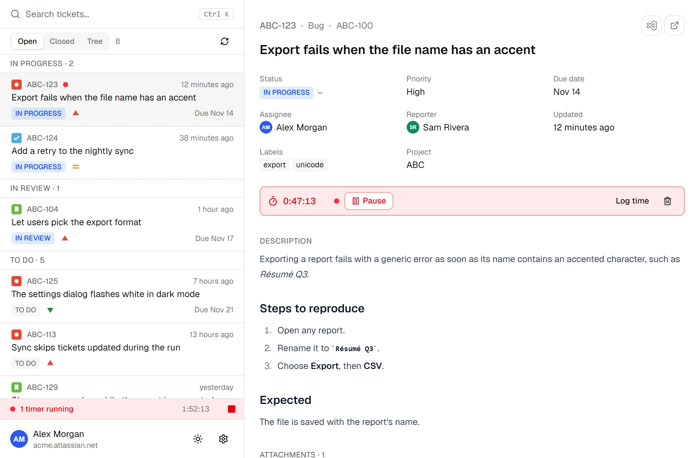
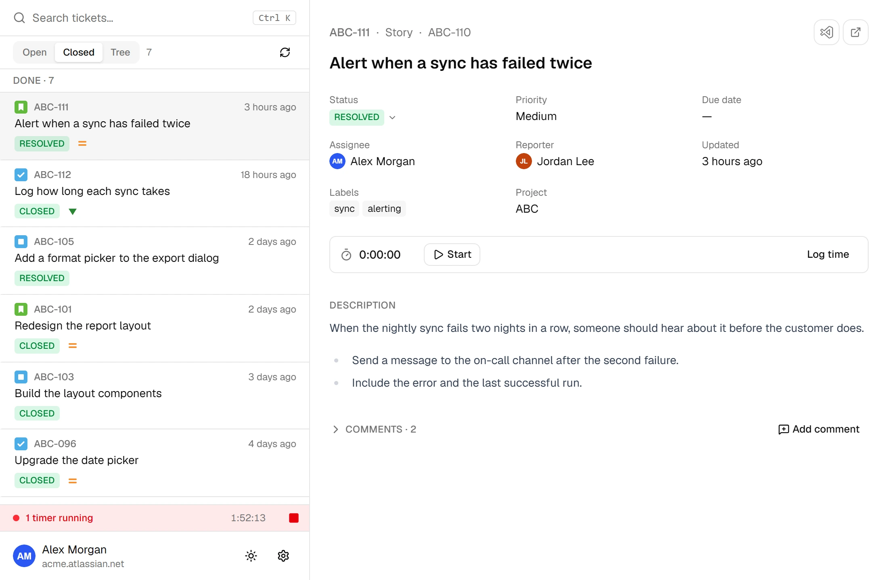
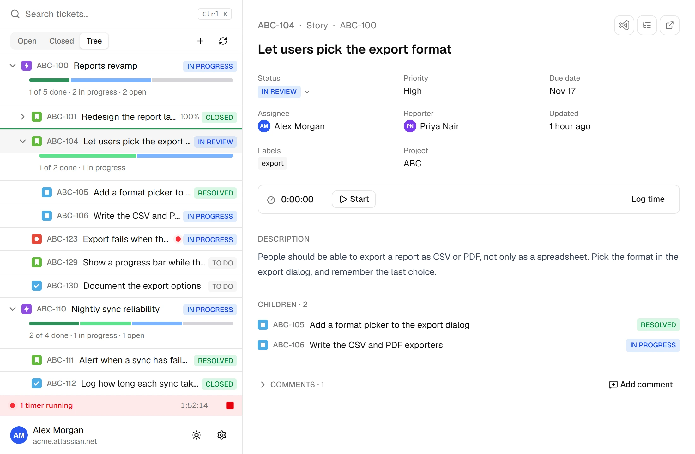
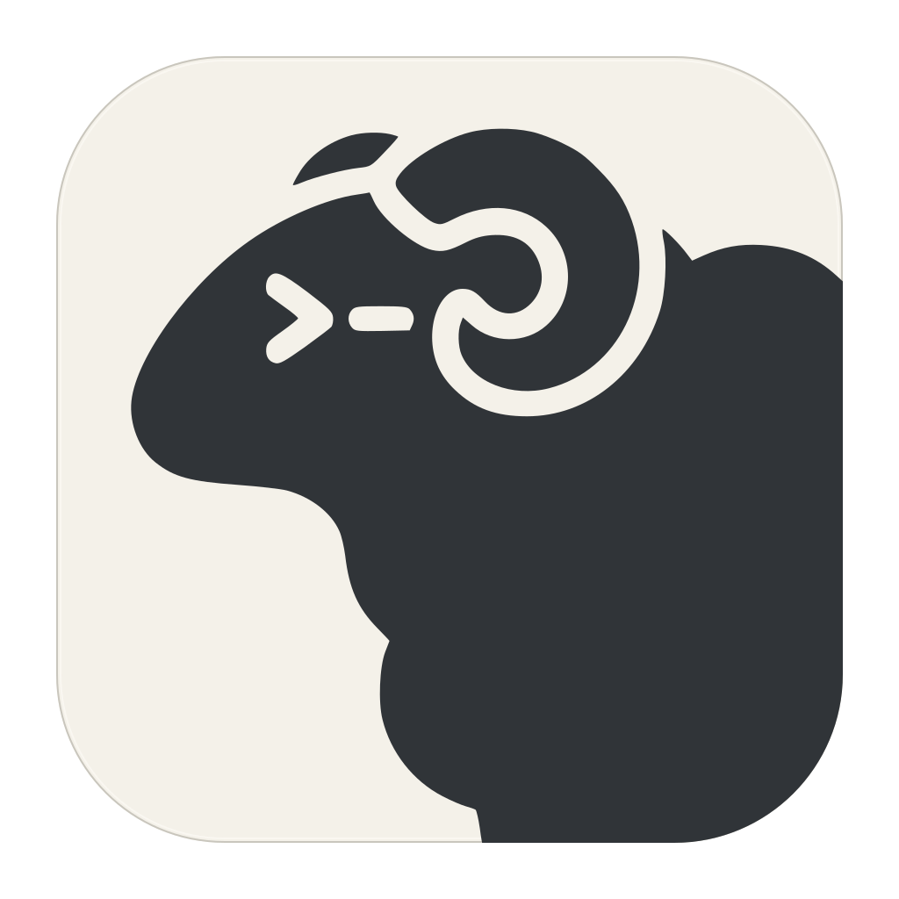

Jira Cloud · Windows · Open source
Keep it simple.
Tracket is a small Windows app for Jira Cloud: your tickets, without the browser tab. Move them through their workflow, track the time you spend, and start work on a ticket in its own git worktree.
Free, MIT-licensed. Windows 10 and 11.
What's assigned to you, grouped by status. Pick one to see it next to the list.



Screenshots of Tracket with made-up tickets.
Time tracker
A timer on every ticket.
Start it when you pick a ticket up. It keeps running while the app is closed, and when you are done the time goes to Jira as a worklog.
Quick start
From ticket to editor in one click.
The button at the top of a ticket creates a git worktree named after it, on a branch with the same name, and opens it where you work.
-

VS Code
Opens the worktree in VS Code. The prompt for Claude Code is copied to your clipboard, ready to paste.
Needs the
codecommand on yourPATH. -

herdr
Opens a space in the worktree that runs Claude Code, with the ticket as its first message. If one is already open there, it is shown instead.
The herdr window has to be open.
Link each Jira project to a local repository in Settings, Quick start. Git must be installed. Logos belong to their owners, and Tracket isn't affiliated with them.
What a ticket needs between assigned and done
Each part sits where it belongs in a ticket's life.
-
To do
Find the ticket
Your open and closed tickets, a tree of epics and their children with progress, and a search palette that finds a ticket by key or by words.
-
In progress
Start working in one click
Creates a git worktree named after the ticket, on a branch with the same name, and opens it in VS Code. Or in herdr, with Claude Code already holding the ticket as its first message.
.claude/worktrees/ABC-123 -
In progress
Track time on several tickets at once
Every ticket has its own timer. They keep running while the app is closed. When you're done, post the time to Jira as a worklog.
-
Done
Move tickets, one or many
Drop tickets on a status in the workflow graph, fill in what a transition asks for, undo a move, or edit the same fields on many tickets at once.
Your token stays on your computer.
Tracket talks to your Jira site. That is the whole list.
-
Token
In the Windows Credential Manager. The interface never gets to see it.
-
On disk
Timers, settings and linked folders: ticket keys and field choices, never titles or descriptions.
-
Network
Your Jira site, and github.com to look for updates. No analytics, no crash reports.
-
Attachments
Shown, not stored. Nothing is cached to disk.
-
Sign out
Erases the token and everything else the app kept on this computer.
Ready in three steps
-
Download and install
Get the installer from the latest release. Windows may warn about an unknown publisher, because the installer isn't code-signed yet: choose More info, then Run anyway.
-
Create an API token
In your Atlassian account, create a token for Tracket. You can revoke it from the same page whenever you like.
-
Sign in
Enter your site (
acmeoracme.atlassian.net), your email and the token.
Questions
Does it work with Jira Server or Data Center?
No. Tracket uses the Jira Cloud API, so it needs a site on Atlassian Cloud.
Is there a Mac or Linux version?
Not yet. The installer is for Windows only.
How do updates work?
When Tracket starts, it asks GitHub for the latest release and offers to install it. Every update is signed, and the app checks the signature before installing. You can turn the check off in Settings, About.
Is it from Atlassian?
No. Tracket is an independent open-source project, not affiliated with or endorsed by Atlassian. Jira is a trademark of Atlassian.